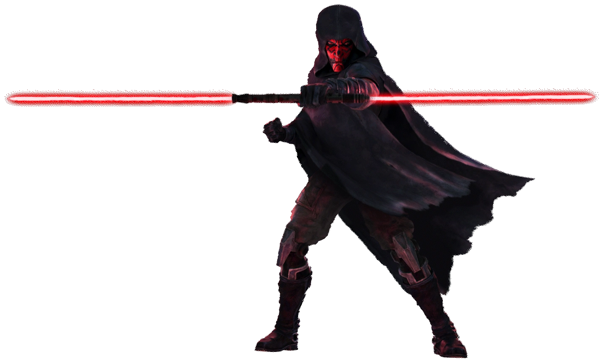

Darth Maul foi treinado em segredo por Darth Sidious para ser uma arma letal dos Sith.
Após assassinar Qui-Gon Jinn e ser cortado ao meio por Obi-Wan Kenobi, ele sobreviveu graças ao ódio e retornou com pernas mecânicas.
Ele assumiu o controle do submundo do crime e conquistou Mandalore